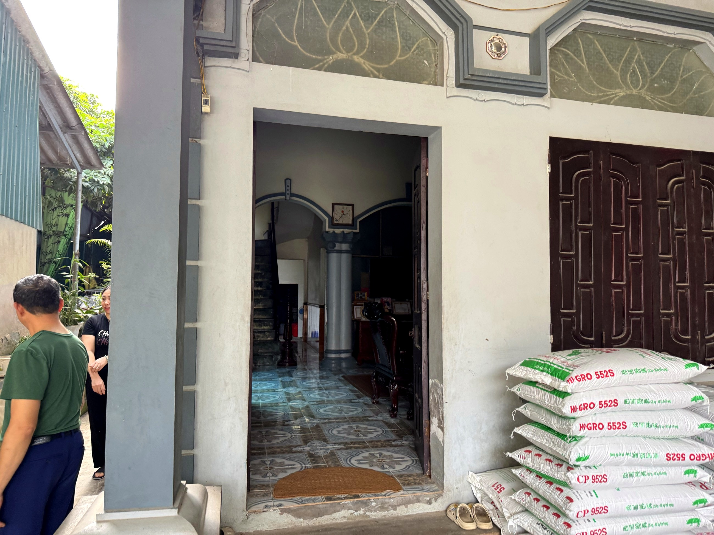
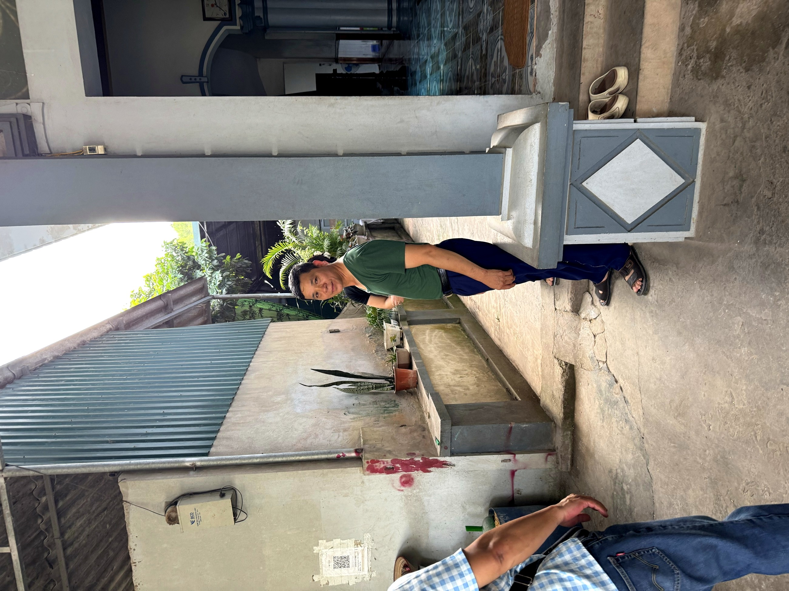

Loại hìnhTypeType
Ẩm thực · đặc sảnLocal Cuisine · SpecialtiesGastronomie Locale · Spécialités

Ông Phạm Văn Lập là người giữ nghề nấu rượu thủ công truyền thống tại thôn Đồi Lý – một nghề đòi hỏi kinh nghiệm, bí quyết và sự kiên nhẫn tích lũy qua nhiều năm. Rượu Tám Lập được nấu từ gạo quê trồng trên đồng ruộng địa phương, lên men tự nhiên theo phương pháp truyền thống, không pha chế, mang hương vị đậm đà đặc trưng của vùng đất Đồi Lý.
Song song với nghề nấu rượu, gia đình ông Lập cũng sản xuất và cung cấp gạo quê Đồi Lý – loại gạo canh tác theo lối truyền thống, đang trong định hướng xây dựng thương hiệu OCOP địa phương.
Điểm đến mang lại trải nghiệm thực chất: được tận mắt xem quy trình nấu rượu từ nguyên liệu đến thành phẩm, nghe ông Lập kể về bí quyết gia truyền và thưởng thức ly rượu quê chân thực ngay tại nơi sản xuất.
Mr. Pham Van Lap is the custodian of traditional handmade wine distillation in Doi Ly village – a craft demanding years of accumulated experience, secrets, and patience. Tam Lap Wine, brewed from local rice grown in the fields, naturally fermented using traditional methods, and unadulterated, carries the rich, distinctive flavor of the Doi Ly region.
Alongside rượu (rice wine) making, Mr. Lập's family also produces and supplies Đồi Lý village rice – traditionally cultivated rice, currently being developed into a local OCOP brand.
This destination offers an authentic experience: witness the entire rượu (rice wine) making process from ingredients to finished product, hear Mr. Lập share family secrets, and savor a genuine glass of local wine right where it's made.
M. Pham Van Lap est le gardien de la distillation artisanale traditionnelle de vin dans le village de Doi Ly – un métier qui exige des années d'expérience, de secrets et de patience accumulés. Le vin Tam Lap, brassé à partir de riz local cultivé dans les champs, fermenté naturellement selon des méthodes traditionnelles et non altéré, porte la saveur riche et distinctive de la région de Doi Ly.
Parallèlement à la fabrication du rượu (vin de riz), la famille de M. Lập produit et fournit également le riz du village de Đồi Lý – un riz cultivé de manière traditionnelle, actuellement en cours de développement pour devenir une marque OCOP locale.
Cette destination offre une expérience authentique : assistez à tout le processus de fabrication du rượu (vin de riz), des ingrédients au produit fini, écoutez M. Lập partager les secrets de famille et savourez un verre de vin local authentique directement sur le lieu de production.
| Tham quan xưởng nấu rượuTour the traditional wine distilleryVisitez la distillerie de vin traditionnelle | Xem quy trình nấu, chưng cất rượu thủ côngWitness the traditional process of brewing and distilling homemade liquor.Observez le processus traditionnel de brassage et de distillation de l'alcool artisanal. |
| Thưởng thức rượu quêSavor authentic local spirits.Dégustez l'alcool local traditionnel. | Nếm thử rượu Tám Lập tại chỗTaste Tám Lập wine on-siteDégustez le vin Tám Lập sur place |
| Nghe giới thiệu nghềDiscover local trades and crafts.Découvrez les métiers traditionnels. | Ông Lập chia sẻ về bí quyết và nghề gia truyềnMr. Lap shares family secrets and traditional crafts.Monsieur Lap partage les secrets et le savoir-faire familial traditionnel. |
| Mua sắm đặc sảnSpecialty shoppingAchats de spécialités locales | Rượu Tám Lập, gạo quê Đồi Lý đóng góiTám Lập wine, packaged Đồi Lý village rice.Vin Tám Lập, riz du village de Đồi Lý emballé. |
| Đón khách đoànGroup WelcomeAccueil de groupes | Phục vụ nhóm nhỏ theo lịch sắp xếpSmall groups served by prior arrangementPetits groupes servis sur rendez-vous |


Nhà ông Lập hướng tới xây dựng thương hiệu Rượu Tám Lập và Gạo quê Đồi Lý thành sản phẩm OCOP đặc trưng của xã Mỹ Đức, gắn với câu chuyện nghề thủ công và canh tác truyền thống. Hoạt động du lịch đóng vai trò quan trọng trong việc giới thiệu sản phẩm tới du khách, tạo kênh tiêu thụ trực tiếp và tôn vinh người giữ nghề trong cộng đồng. Điểm đến Du lịch cộng đồng Mường Cốc, Xã Mỹ Đức – Thành phố Hà NộiMr. Lap's house aims to build the brands Ruou Tam Lap (Lap's Eight-Year Wine) and Gao Que Doi Ly (Doi Ly Village Rice) into distinctive OCOP products of My Duc commune, linked to stories of traditional crafts and farming. Tourism plays a crucial role in introducing these products to visitors, creating a direct sales channel, and honoring the craft keepers in the community. Muong Coc Community-Based Tourism Destination, My Duc Commune – Hanoi City.La maison de M. Lập vise à développer les marques Rượu Tám Lập et Gạo quê Đồi Lý en produits OCOP distinctifs de la commune de Mỹ Đức, liés aux récits d'artisanat et d'agriculture traditionnels. Le tourisme joue un rôle crucial dans la présentation de ces produits aux visiteurs, créant un canal de vente direct et honorant les artisans de la communauté. Destination de Tourisme Communautaire Mường Cốc, Commune de Mỹ Đức – Ville de Hà Nội.